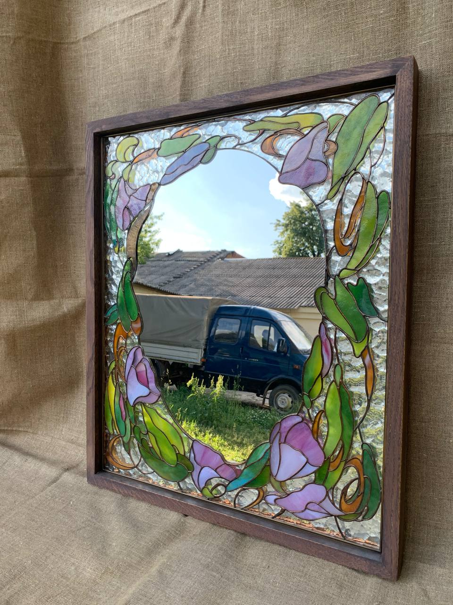
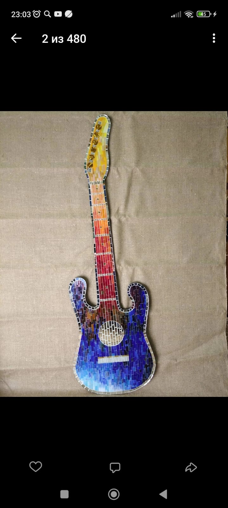
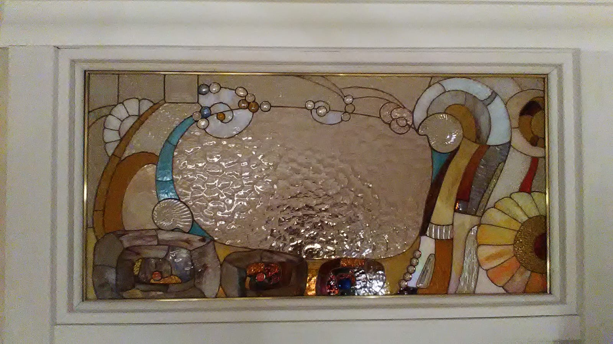
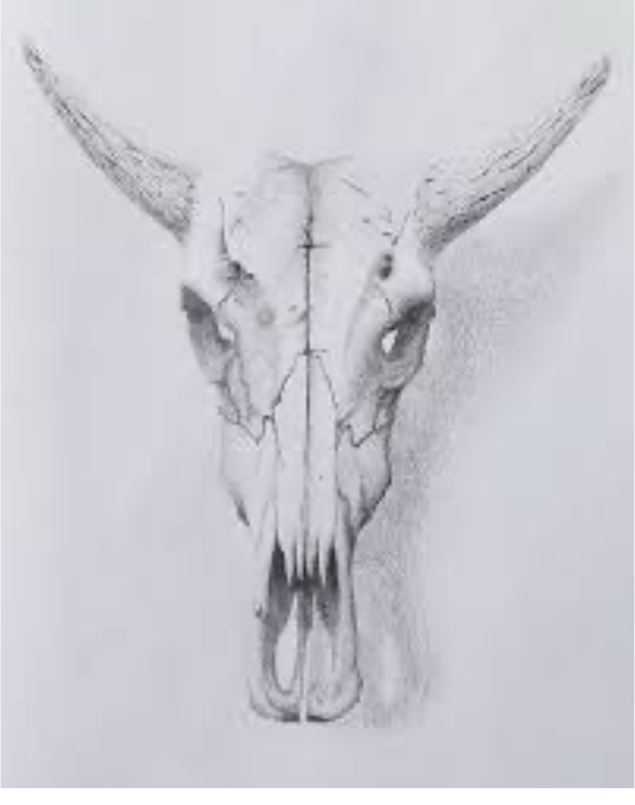

Здесь фото работ за последние годы. Всё сделано вручную — от карандашного наброска до финальной пайки. Витражи в технике Тиффани, мозаичные панно из стеклянной смальты, декоративные зеркала, оконные вставки.
Витраж в интерьере рассеивает свет и меняет восприятие комнаты. Панно с розами или птицами хорошо садится в классическую гостиную. Абстрактный фрамуг дополняет минималистичный холл. Витражное зеркало в прихожей работает как самостоятельный декор.
Техника Тиффани даёт тонкие швы и детальный рисунок: каждый фрагмент стекла оборачивается медной фольгой и паяется оловом. Мозаика собирается из колотой смальты на подготовленное основание — ей можно покрывать криволинейные поверхности. Стёкла подбираю из европейских и американских палитр: Spectrum, Uroboros, Wissmach.
В галерее собраны работы в нескольких техниках. Основная — Тиффани: каждый кусочек стекла обтачиваю на шлифовальном станке, оборачиваю медной фольгой шириной 5-6 мм и спаиваю оловянным припоем ПОС-61. Шов получается тонкий, около 2 мм. Это позволяет делать детальные рисунки с мелкими элементами — лепестки, перья, тонкие стебли.
Мозаичные панно собираю из колотой стеклянной смальты на бетонное или фанерное основание. Смальту колю вручную, подгоняя каждый фрагмент. Затирка — на цементной основе, тонированная в цвет композиции. Мозаикой можно покрыть столешницу, нишу в стене, обрамление камина. Она не боится влаги и перепадов температуры.
Витражные зеркала — отдельная история. Зеркальное полотно вырезаю по форме, а вокруг него собираю раму из цветного стекла в той же технике Тиффани. Получается декоративная вещь, которая работает и как зеркало, и как световой акцент на стене.
Spectrum — американское стекло, ровное по толщине, хорошо режется. Беру его для фонов и крупных плоскостей. Uroboros (сейчас Oceanside) — стекло с интересными переходами цвета, иногда с иризацией. Идёт на акцентные детали: крылья птиц, центральные цветы. Wissmach — бюджетнее, но палитра огромная, больше 400 оттенков. Использую в учебных работах и когда нужен конкретный редкий цвет. Lamberts — немецкое выдувное стекло, дорогое. Толщина плавает от 2 до 4 мм в одном листе. Зато текстура живая, с пузырьками воздуха. Беру его на ответственные заказы, где важна игра света.
Обратите внимание на паяные швы. В хорошей работе они ровные, одинаковой ширины, без наплывов и раковин. Стекло подогнано плотно — зазоры между деталями минимальные. Цветовые переходы — ещё один маркер. Я подбираю стёкла так, чтобы соседние фрагменты не спорили друг с другом, а плавно перетекали по тону. Иногда на это уходит полдня — перебираю листы, прикладываю на световом столе, меняю.
Любую работу из галереи можно повторить с изменениями: другой размер, другая палитра, адаптация под ваш проём. Присылайте фото окна или ниши, я нарисую эскиз и посчитаю стоимость. Обычно укладываюсь в день с расчётом.




Закажите витраж по мотивам любой работы из галереи или обсудите собственный проект. Расчёт стоимости в течение дня.
Пришлите фото окна или проёма — нарисую эскиз и покажу, как витраж будет смотреться у вас.